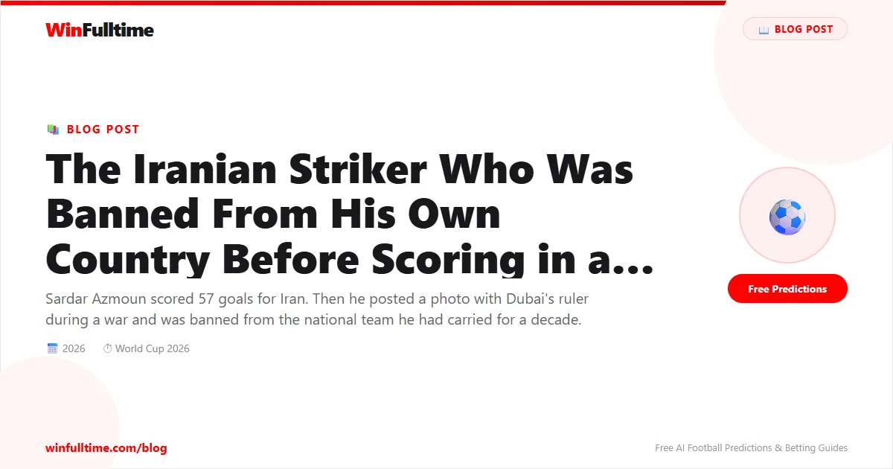

On June 1, 2026, Iran announced their 26-man squad for the World Cup. Seventeen of the players were domestic-based, their clubs having been shut down since February due to the war. They had spent weeks training in Antalya, Turkey, waiting for US visas that would not come until the last possible moment. Their base camp had been moved from Tucson, Arizona to Tijuana, Mexico. Their federation president had been denied entry to Canada for the FIFA Congress. Their participation in the tournament had been in doubt for months.
And Sardar Azmoun was not among them.
The omission of Iran's third-highest goalscorer in history — a man with 57 goals in 91 international appearances — was not a football decision. Everyone in Iran knew it. The coach, Amir Ghalenoei, cited"technical reasons." No one believed him.
In March 2026, at the height of the US-Israel-Iran conflict, Sardar Azmoun posted a photo on his Instagram story. It showed him meeting Sheikh Mohammed bin Rashid Al Maktoum, the ruler of Dubai and Prime Minister of the United Arab Emirates. The caption read: "I had the pleasure and honor of meeting one of the most successful minds in the world."
For a player based in Dubai with Shabab Al-Ahli, a meeting with the city's ruler would normally be unremarkable. But this was wartime. The UAE was a US ally. Iranian state media erupted. The Fars News Agency, affiliated with the Islamic Revolutionary Guard Corps, cited"an informed source within the national team" confirming Azmoun had been expelled. On state television, pundit Mohammad Misaghi did not hold back: "We should not mince words with such people. They should be told that they are not worthy of wearing the national team jersey."
Azmoun deleted the photo. It did not matter. The Revolutionary Guard threatened legal action. Reports emerged of seizure orders against his assets in Iran. He was done.
According to the Novad News channel, Iranian authorities ordered the seizure of assets belonging to Azmoun and two other UAE-based Iranian players: forward Mehdi Ghayedi and former international Soroush Rafiei. The orders effectively made it impossible for Azmoun to return to Iran without facing legal consequences.
Azmoun's last appearance for Iran came in a World Cup qualifier against Uzbekistan in March 2025. Iran had already secured their place at the 2026 tournament, finishing top of their AFC qualifying group. Azmoun had scored in that campaign — one of his 57 international goals that placed him behind only Ali Daei (108) and Mehdi Taremi (58) in Iran's all-time scoring list.
He had made his senior debut as a teenager in 2014 and had been a constant presence ever since: at the 2018 World Cup in Russia, at the 2022 World Cup in Qatar, through two AFC Asian Cups, through the political protests of 2022 when he had openly supported the women's rights movement following the death of Mahsa Amini."At worst I'll be dismissed from the national team," he wrote then. "No problem. I'd sacrifice that for one hair on the heads of Iranian women."
That time, he survived. The hardliners demanded his head, but he played in the 2022 World Cup. This time, the stakes were different. The war had changed everything.
| Stat | Value |
|---|---|
| International Caps | 91 |
| International Goals | 57 |
| Rank in Iran's All-Time Scorers | 3rd (behind Daei, Taremi) |
| World Cups Played | 2018, 2022 |
| European Clubs | Zenit St Petersburg, Bayer Leverkusen, AS Roma |
| Iranian League Appearances | 0 (entire career abroad) |
Azmoun has not been back to Iran since the controversy. He cannot be. The asset seizure orders and legal threats make a return impossible. He continues to play for Shabab Al-Ahli in Dubai, where he scored 27 goals last season to win the UAE Pro League and domestic cup double. On the pitch, he is still the same player — quick, powerful, a finisher of rare quality. Off it, he is a man watching his country's World Cup campaign from a television in the Emirates.
In a lengthy Instagram post in May 2026, Azmoun appeared to accept his fate. He wished his teammates success, hoping they would"bring happiness to the hearts of the Iranian people." Privately, those close to him described a mixture of resignation and defiance. He had always known the risk of speaking out. He had taken it anyway.
Iran's Vice President Abdolkarim Hosseinzadeh made a public appeal for Azmoun's reinstatement, writing on X:"The need of the homeland is to preserve the threads of connection between its children. Let us not overlook Sardar Azmoun's action in displaying this bond, and if possible, bring him back to the national team." The coach ignored the plea. The federation president, Mehdi Taj, said he was"unaware" of any plans to recall him.
Azmoun is not the first Iranian footballer to fall foul of the state. In 2022, the entire women's national team was branded"wartime traitors" on state TV; seven of the delegation sought asylum in Australia. Men's players have been cautioned, censored, and dropped before. But Azmoun's exile is arguably the highest-profile political expulsion in Iranian football history — a star striker at his peak, removed from a World Cup squad not for form or fitness, but because of a photograph.
The tragedy, from a football perspective, is that Iran need him. Their squad for 2026 is the weakest in a decade. Seventeen of the 26 players have not played competitive football since February because Iran's domestic league was suspended due to the war. Their group — New Zealand, Belgium, Egypt — is navigable, but without their most potent attacking threat, the task becomes significantly harder.
Iran have never progressed beyond the group stage of a World Cup. They will attempt to change that history starting June 15 in Los Angeles without the player who scored more goals for their national team than anyone except two legends of the game.
Azmoun turned 31 in January 2026. He has years of football left at the highest level. But international football, for him, may be over. The Iranian regime does not have a history of forgiveness for those deemed disloyal, especially in wartime. The next World Cup qualifying campaign will begin in 2027. Whether Azmoun will be permitted to play — or whether he will ever wear the Team Melli shirt again — depends on factors far beyond his control.
What is certain is this: Sardar Azmoun scored 57 goals for his country, including crucial strikes in World Cup qualifying matches that helped send Iran to back-to-back World Cups. He played through two tournaments while being denounced by state media. He supported women's rights knowing it could cost him his place. And he posted a photograph that, in the context of war, cost him everything.
He is banned from his own country. He will watch the 2026 World Cup from Dubai. And he will wonder, as anyone would, what might have been.
Get free daily football predictions for every World Cup match, including Iran's group stage campaign.
Generate optimized accumulator combinations from today's AI-powered predictions. Set your target odds and get instant ticket suggestions.
Free Ticket Builder →